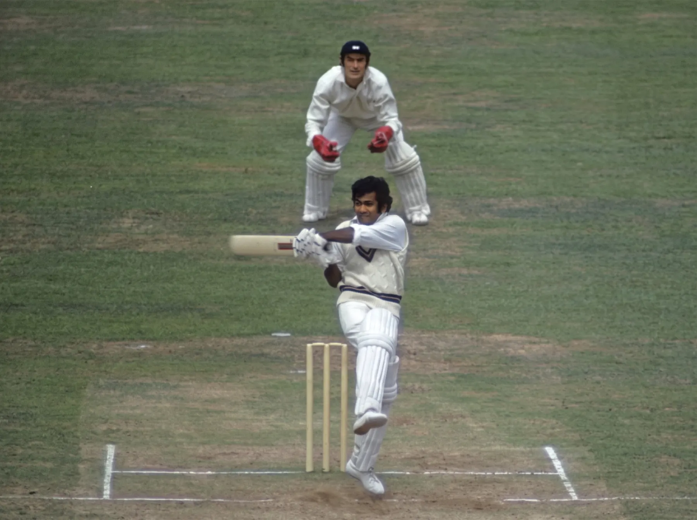
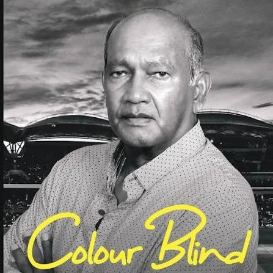

Raj Singh · Chief Editor and Advisor
Calls it a tutorial on becoming a successful cricketer, and a must-read for anyone facing long odds.

West Indies · Guyana · Warwickshire
The Little Giant of West Indies cricket. From the streets of Port Mourant to two World Cup wins and a British Empire Medal, and now a life spent coaching young players.
66 Tests · 4,399 runs · average 44.43 · 12 hundreds · World Cup winner 1975 and 1979
His story
Alvin Isaac Kallicharran was born on 21 March 1949 in Port Mourant, a village in Berbice, then British Guiana. He has described a home so small that around twenty people shared it, a job at a rice mill by the age of ten, and street games played with coconut branches for bats and balls shaped from tree wood.
His first real bat came from Basil Butcher, a Guyanese Test batsman. By 1966 he was captaining Guyana's under-16 side, and a first-class debut followed. At 5 ft 4 in, the man they called the Little Giant did not look like someone to fear, yet bowlers across the world learned otherwise. Cricinfo remembers a batsman of poise, balance and a full range of strokes, whose bat seemed too large for him. His own site calls him a classical batsman and one of the great West Indies batsmen of the Golden Era.
He played 66 Tests for the West Indies between 1972 and 1981, captained the side in 1977–78 and 1978–79, and won the World Cup in both 1975 and 1979. Two decades with Warwickshire, a Wisden Cricketer of the Year award and a long second career as coach, mentor and author followed. Today he coaches young players in Charlotte, North Carolina, runs the Alvin Kallicharran Foundation with his wife, Patsy, and works as a freelance coach and motivational and public speaker, travelling to coach and speak to children and clubs elsewhere.
“The game has been so good to me” Alvin Kallicharran, at the launch of his autobiography, Georgetown. Caribbean Today
Life history
Born on 21 March in a village in what was then British Guiana. Street cricket came first.
Led the Guyana under-16 team in 1966 and made his first-class debut for Guyana the following season.
Started a county career that ran until 1990. His Warwickshire cap arrived in 1972.
Played his first Test for the West Indies on 6 April against New Zealand in Guyana.
Many regard this century against England as his finest innings. It is also remembered for a run-out appeal that England withdrew overnight so he could resume the next morning. His first one-day international came on 5 September 1973.
Scored 78 against Australia in the first World Cup, and famously took 35 runs off ten balls from Dennis Lillee.
Took over from Clive Lloyd during the Packer dispute and led the side in India and Sri Lanka. His highest Test score, 187, came against India in December 1978.
One of only six West Indians to be in both the 1975 and 1979 winning squads.
Last Test on 4 January against Pakistan, last one-day international on 4 February against England.
Led a West Indian team on a tour there, then played for Transvaal and Orange Free State. He told Sportstar the tour gave black and coloured South Africans international-standard cricket to watch like never before, and that they were delighted to see his side beat the white South African team.
Also named South African Cricket Annual Cricketer of the Year, and enjoyed his Warwickshire benefit season.
A double century and a six-wicket haul in one NatWest Trophy match against Oxfordshire.
Took on the role of ambassador for the London Olympics 2012.
Honoured in the New Year Honours for services to cricket and charity. In March he toured India, coaching in Chennai and Pilibhit and previewing his memoir, Colour Blind, in Chennai. In August he became a mentor to the Puducherry men's and women's teams.
Served as a member of USA Cricket's men's youth selection panel.
Spent his 74th birthday in his home village for the launch of an illustrated children's book about his life.
Founded in May with his wife, Patsy, to serve underprivileged children in Guyana through education and sport.
Coaches young players at Stanley School of Cricket and Elite Cricket Academy in Charlotte, North Carolina, where Elite lists him as Brand Ambassador and Mentor. He also speaks at events about his life in the game.
Cricket and stats
Left-handed batsman, right-arm off-break bowler. West Indies 1972 to 1981, Guyana, Berbice, Warwickshire, Queensland, Transvaal and Orange Free State.
| Tests | ODIs | First-class | List A | |
|---|---|---|---|---|
| Matches | 66 | 31 | 505 | 383 |
| Runs | 4,399 | 826 | 32,650 | 11,336 |
| Average | 44.43 | 34.41 | 43.64 | 34.66 |
| 100s / 50s | 12 / 21 | 0 / 6 | 87 / 160 | 15 / 71 |
| Top score | 187 | 78 | 243* | 206 |
| Wickets | 4 | 3 | 84 | 42 |
| Catches | 51 | 8 | 323 | 86 |

The book
A memoir and a guide for anyone in a slump or searching for purpose. Alvin tells his life in four stages: a poor childhood, his rise as a cricketer, a search for meaning through the game, and a decision to give back with spiritual awareness. It is also a practical guide for startups and aspiring cricketers, and a case for staying humane, decent and strong in hard circumstances.
He wrote it, with his wife Patsy's encouragement, to give back to young people. Each chapter ends with key takeaways and action steps. The title reflects his belief that sport is the ultimate equalizer and that the ball knows no color. Its themes include community giving, hope and unity.
Signed copy: $20 plus $3.99 shipping within the USA. Price as listed on the book's own site.
Why he needed time to write his story, and the four stages of his life.
Growing up as the grandson of indentured laborers on Guyana's sugar plantations.
The path to playing for Guyana.
From youth cricket to the big leagues, and meeting the game's greats.
Twelve keys to how top players perform consistently under pressure.
Mentors and captains, and what makes people follow a leader.
Anecdotes and milestones, including his Test debut hundred and World Cup wins.
The history and daily demands of the professional county game.
His years playing in South Africa.
India's 1983 World Cup win, and what separates teams that rise from those that fade.
Unfair play, controversial run-outs, being dropped and injuries.
A hijacking in Soweto and how it changed his thinking.
His spiritual journey and his belief that life has a purpose.
Raj Singh · Chief Editor and Advisor
Calls it a tutorial on becoming a successful cricketer, and a must-read for anyone facing long odds.
Robert Caine · Coach at Alvin's cricket school
Says Alvin shows how champions think, and challenges readers to be bridge builders and generous givers.
Kapil Dev · Former Indian cricketer
Has played cricket with Alvin for a long time and wishes him success, good health and happiness.
Coaching today
Alvin coaches young players at two Charlotte-area academies.
Charlotte, North Carolina
Alvin coaches young cricketers at the school.
Stanley School of Cricket on Instagram →Charlotte and Indian Trail, North Carolina
The academy lists Alvin as Brand Ambassador and Mentor. It trains players of all ages and levels through Grassroots, Intermediate, Competitive and High Performance programs, plus one-on-one coaching. Training is indoors in Charlotte and outdoors in Indian Trail.
elitecricket.com →Give back
“I did it so can you.”
Founded in May 2024 by Alvin and Patsy Kallicharran, the foundation is a 501(c)(3) public charity registered in North Carolina. It uses education and sport to help children in Guyana who need it most.
It distributes copies of Colour Blind for ages 11 to 21 and picture books for ages 3 to 5. Another picture book, for ages 6 to 11, is in the works. Guyana's Ministry of Education has said it will buy copies of Colour Blind for students of sport.
Caribbean National Weekly →Working with community groups and local leaders, the foundation will identify children in need and provide textbooks, workbooks and school supplies. Sponsorship would follow a child from primary through secondary school.
The aim is to reach 5,000 children a year for five years through grassroots efforts, including community groups and places of worship.
Nutrition and health education, mental health awareness, drug and violence prevention, counseling, fitness, technology education, financial literacy, career and apprenticeship programs, and family engagement in education.
The foundation relies on donations and sponsorship to cover printing, shipping, and volunteer travel and logistics. No one is paid for their services, and no money is planned for marketing. Outreach is through the website, social media and word of mouth.
Ask how to donate, sponsor or volunteer →Awarded for services to cricket and charity. His publisher's biography adds that he is Patron of the United Anglo-Caribbean Society, an Ambassador for American College Cricket, and has raised significant sums for Sport Relief.
Guyana Cricket Board congratulates him →Part of the proceeds from his illustrated children's book go to the Georgetown Cricket Club's Bourda restoration fund. Several hundred copies went to the Berbice Cricket Board, and he ran a two-hour coaching session for the county's youth.
Read the report →He now coaches young players at Stanley School of Cricket and Elite Cricket Academy in Charlotte. Earlier he coached juniors with the Triangle Cricket League in Morrisville, and in 2011 he handed out awards to the colts of South Hampstead Cricket Club in London.
Camden New Journal →In 2019 he began mentoring the Puducherry men's and women's cricket teams in India, where his grandparents were born.
The Times of India →India tour 2019
In March 2019 Alvin toured India to make a positive impact in many lives, working with children and communities and previewing Colour Blind.
Chennai · Akshar Arbol International School
Three days before his 70th birthday, he batted against children bowling tennis balls at him in Injambakkam, and talked about the fast bowlers he played with.
Chennai · Amir Mahal
He spoke to the cricket community, fans and local guests about his book and his ties to the city, where his mother was born.
The New Indian Express →Chennai · Music Academy
At an evening presented by Sportstar, he talked about his early life, his heroes and the idea behind Colour Blind.
Sportstar →Pilibhit, Uttar Pradesh
He addressed the crowd, worked with local players and drew media attention, and the tour's photographs include a team with a trophy.
Photos on the India Tour page →Videos
Featured
The 1975 World Cup match against Australia, where ten balls from Dennis Lillee went for 35.
Find it on YouTubePhotographs
Tap any photo to enlarge it, then use the arrows or swipe to move through the set.
In the news
Sportstar · March 2019
On his 70th birthday in Chennai, he spoke about poverty, racism and the idea behind his memoir.
Read on Sportstar →Sportstar
A further Sportstar feature on his career and the great West Indies sides he played in.
Read on Sportstar →Caribbean Today
The Georgetown launch, where he talked about hard work, perseverance and giving back to Guyana and Berbice.
Read the article →Caribbean National Weekly
On the memoir as a call for diversity, and the Ministry of Education’s support for it.
Read the article →The New Indian Express · March 2019
Pre-launch of Colour Blind in Chennai, the city where his mother was born.
Read the article →Kaieteur News · December 2018
The Guyana Cricket Board marks his British Empire Medal.
Read the article →Wickets · 2023
His children's book gives to the restoration of the Bourda ground in Georgetown.
Read the article →The Times of India · August 2019
His appointment to the Puducherry men's and women's sides.
Read the article →The Times of India · March 2019
At Amir Mahal in Chennai, he spoke to the cricket community and fans about Colour Blind and his ties to the city.
Read the article →Chennai · March 2019
Three days before his 70th birthday, he faced school children with a bat and talked about the fast bowlers he played with.
Read on his site →Contact
Questions about coaching, speaking, Colour Blind, the foundation or his India tours are welcome.
hello@alvinkallicharran.com
5817 Cricket Pitch Way, Morrisville, NC 27560, USA
Address as listed on his own site. He also coaches in Charlotte.
Book a 15-minute conversation, or use the contact form on his own site.
Book a 15-minute talk → Contact form → Monthly newsletter, sign up on his site →